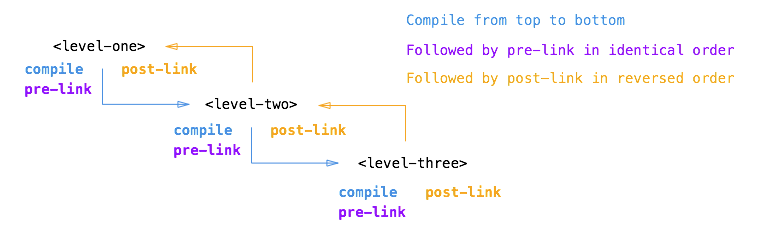
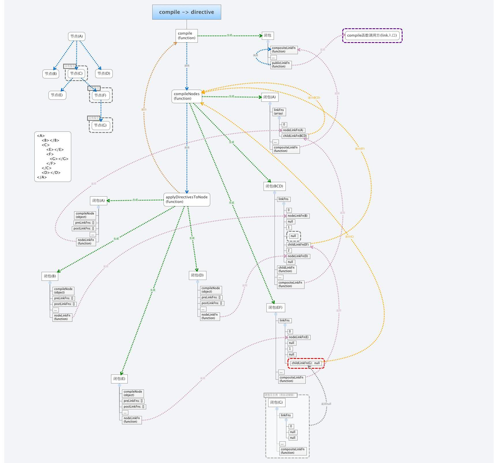

# angularjs指令中的compile与link函数详解
### ng指令编译顺序
1. 浏览器先读取html标识,再渲染dom节点, 建立dom树,完毕后广播一个事件.
2. script标签引用了angular程序,则ng会监听dom完成事件,
查找带有ng-app标签的元素.
3. 从这个起点开始,ng开始递归查找所有子元素里面,符合应用程序里定义好的指令规则.
```
<!-- html标签 -->
<level-one>
<level-two>
<level-three>
哈哈哈
</level-three>
</level-two>
</level-one>
<!-- js部分 -->
<script type="text/javascript">
var app = angular.module("app",[])
app.directive("levelOne",createDirective("levelOne"))
app.directive("levelTwo",createDirective("levelTwo"))
app.directive("levelThree",createDirective("levelThree"))
//创建指令
function createDirective(name){
return function(){
return{
restrict : "E",
compile : function(tEle,tAttrs){
console.log(name + ":compile");
return {
pre : function(scope,iEle,iAttrs){
console.log(name + ":pre link");
},
post : function(scope,iEle,iAttrs){
console.log(name + ":post link");
}
}
}
}
}
}
</script>
```
>* **控制台输出结果:**
>* levelOne:compile
>* levelTwo:compile
>* levelThree:compile
>* levelOne:pre link
>* levelTwo:pre link
>* levelThree:pre link
>* levelThree:post link
>* levelTwo:post link
>* levelOne:post link
### ng编译时的流程
**结论: **
>1. ng在编译link之前会先从外层到内层编译所有的指令
>2. 从外到内编译所有的pre-link指令
>3. 从内到外编译所有的post-link指令
### 深入
修改代码,使其打印element变量
```
function createDirective(name){
return function(){
return {
restrict: 'E',
compile: function(tElem, tAttrs){
console.log(name + ': compile => ' + tElem.html());
return {
pre: function(scope, iElem, iAttrs){
console.log(name + ': pre link => ' + iElem.html());
},
post: function(scope, iElem, iAttrs){
console.log(name + ': post link => ' + iElem.html());
}
}
}
}
}
}
```
> 控制台输出结果
```
levelOne: compile =>
<level-two>
<level-three>
哈哈哈 {{name}}
</level-three>
</level-two>
levelTwo: compile =>
<level-three>
哈哈哈 {{name}}
</level-three>
levelThree: compile =>
哈哈哈 {{name}}
levelOne: pre link =>
<level-two>
<level-three class="ng-binding">
哈哈哈 {{name}}
</level-three>
</level-two>
levelTwo: pre link =>
<level-three class="ng-binding">
哈哈哈 {{name}}
</level-three>
levelThree: pre link =>
哈哈哈 {{name}}
levelThree: post link =>
哈哈哈 {{name}}
levelTwo: post link =>
<level-three class="ng-binding">
哈哈哈 {{name}}
</level-three>
levelOne: post link =>
<level-two>
<level-three class="ng-binding">
哈哈哈 {{name}}
</level-three>
</level-two>
```
> 结果:
#### compile 发生的事情
可以看到compile 与pre-link中的dom是不一样的. pre-link 中增加了 ng-binding 属性, 即绑定了数据.
因为compile函数定义在level-one指令的指令对象里,所以它会被调用并传递一个element对象作为它的参数
ng在遍历dom的时候, 先遇到 level-one 标签. 因为compile函数定义在level-one指令的指令对象里,所以它会被调用并传递一个element对象作为它的参数,浏览器创建这个element对象时,仍然是最原始的html标记
之后继续编译level-two,level-three 节点
#### post-link函数
定义时如果只返回了一个link函数, 那么这个函数默认会作为post-link来处理.
ng遍历完所有的dom并运行完所有的compile,以及pre-link 之后就开始反向调用相关联的post-link函数.
<img src="images/chatu/ng-postlink.png" alt="" />
当运行包含子指令的指令post-link时,反向的post-link规则可以保证它的子指令的post-link是已经运行过的.
所以,当运行level-one指令的post-link函数的时候,我们能够保证level-two和level-three的post-link其实都已经运行过了.
这就是为什么人们都认为post-link是最安全或者默认的写业务逻辑的地方.
但是为什么这里的element跟compile里的又不同呢?
一旦ng调用过指令的compile函数,就会创建一个template element的element实例对象,并且为它提供一个scope对象,这个scope有可能是新实例,也有可能是已经存在,可能是个子scope,也有可能是独立的scope,这些都得依赖指令定义对象里的scope属性值
所以当linking发生时,这个实例element以及scope对象已经是可用的了,并且被ng作为参数传递到post-link函数的参数列表中去.
1.我个人总是使用iElem名称来定义一个link函数的参数,并且它是指向element实例的
所以post-link(pre-link)函数的element参数对象是一个element实例而不是一个template element.
所以上面例子里的输出是不同的
#### pre-link
当写了一个post-link函数,你可以保证在执行post-link函数的时候,它的所有子级指令的post-link函数是已经执行过的.
在大部分的情况下,它都可以做的更好,因此通常我们都会使用它来编写指令代码.
然而,ng为我们提供了一个附加的hook机制,那就是pre-link函数,它能够保证在执行所有子指令的post-link函数之前.运行一些别的代码.
这句话是值得反复推敲的
pre-link函数能够保证在element实例上以及它的所有子指令的post-link运行之前执行.
所以它使的post-link函数反向执行是相当有意义的,它自己是原始的顺序执行pre-link函数
这也意为着pre-link函数运行在它所有子指令的pre-link函数之前,所以完整的理由就是:
一个元素的pre-link函数能够保证是运行在它所有的子指令的post-link与pre-link运行之前执行的.见下图：

案例: 需要使用pre-link的情况
```
// html
<b ody ng-app="myApp">
<my-parent></my-parent>
</b ody>
// js
var app = angular.module('myApp', []);
app.directive('myParent', function () {
return {
restrict: 'EA',
template: '<div>{{greeting}}{{name}}'+
'<my-child></my-child>'+
'</div>',
link: function(scope,elem,attr){
scope.name = 'Lovesueee';
scope.greeting = 'Hey, I am ';
}
};
});
//子指令
app.directive('myChild', function () {
return {
restrict: 'EA',
template: '<div>{{says}}</div>',
link: function(scope,elem,attr){
scope.says = 'Hey, I am child, and my parent is ' + scope.name;
}
};
});
// 输出
Hey, I am Lovesueee
Hey, I am child, and my parent is undefined
// 父指令中的name值无法获取到. 此时需要定义在pre中
// 改进后的
app.directive('myParent', function () {
return {
restrict: 'EA',
template: '<div>{{greeting}}{{name}}'+
'<my-child></my-child>'+
'</div>',
link: {
pre: function(scope,elem,attr){
scope.name = 'Lovesueee';
scope.greeting = 'Hey, I am ';
}
}
};
});
```
由于父指令的postLink总是在子指令的preLink和postLink之后执行，而父指令的preLink总是在子指令的preLink和postLink之前执行，所以当父指令要通过scope传递数据数据给子指令（或者说子指令想要访问父指令的作用域数据）时，我们便可以通过preLink函数给scope赋值，
### 总结:
> Compile 函数 操作模板dom
使用compile 可以改变原始的dom(template element). 在ng创建原始dom实例以及创建scope实例之前
可以应用于需要生成多个element实例,只有一个template elment的情况.
ng-repeat指令就是这样作用的.
它就是在compile函数阶段改变原始的dom生成多个原始dom节点,然后每个又生成element实例.因为compile只会运行一次,所以当你需要生成多个element实例的时候是可以提高性能的.
template element以及相关的属性是做为参数传递给compile函数的,不过这时候scope是不能用的:
```
/**
* Compile function
*
* @param tElem - template element
* @param tAttrs - attributes of the template element
*/
function(tElem, tAttrs){
// ...
};
```
> pre-link 函数
使用pre-link函数可以运行一些业务代码在ng执行完compile函数之后,但是在它所有子指令的post-link函数将要执行之前.
如子指令需要使用父指令的变量时,如果父指令的值定义在post中, 则子指令无法获取到该值,此时需要把值定义在父指令的pre-link中.
scope对象以及element实例将会做为参数传递给pre-link函数:
```
/**
* Pre-link function
*
* @param scope - scope associated with this istance
* @param iElem - instance element
* @param iAttrs - attributes of the instance element
*/
function(scope, iElem, iAttrs){
// ...
};
```
> post-link 函数
使用post-link函数来执行业务逻辑,在这个阶段,它已经知道它所有的子指令已经编译完成并且pre-link以及post-link函数已经执行完成.
这就是被认为是最安全以及默认的编写业务逻辑代码的原因.
scope实例以及element实例做为参数传递给post-link函数:
```
/**
* Post-link function
*
* @param scope - scope associated with this istance
* @param iElem - instance element
* @param iAttrs - attributes of the instance element
*/
function(scope, iElem, iAttrs){
// ...
};
```
> 总结:
>* compile
compile 函数的作用是对指令所在的模板dom进行转换,创建一个template element的element实例对象,同时为它提供一个scope对象, 由于一般不需要进行模板转换, 所以compile不常用.
可以传递3个参数 tElement, tAttrs, transclude
>* link
link 函数作用是在模型和视图之间建立关联. 同时用于注册并执行指令, 在compile编译完毕后会执行.
link的参数
function link(scope, iElement, iAttrs, controller, transcludeFn) { ... }
>* pre-link 在compile之后,在post-link之前执行, 一般不用该函数
>* post-link 也就是上面的link函数,一般业务都会放在post-link函数中执行
>* compile只会执行一次, 而link对于指令的每个实例都会执行一次
>* scope在link阶段才会被绑定到元素上.
<img src="images/chatu/angular执行流程图.png" alt="" />
{{name}}
